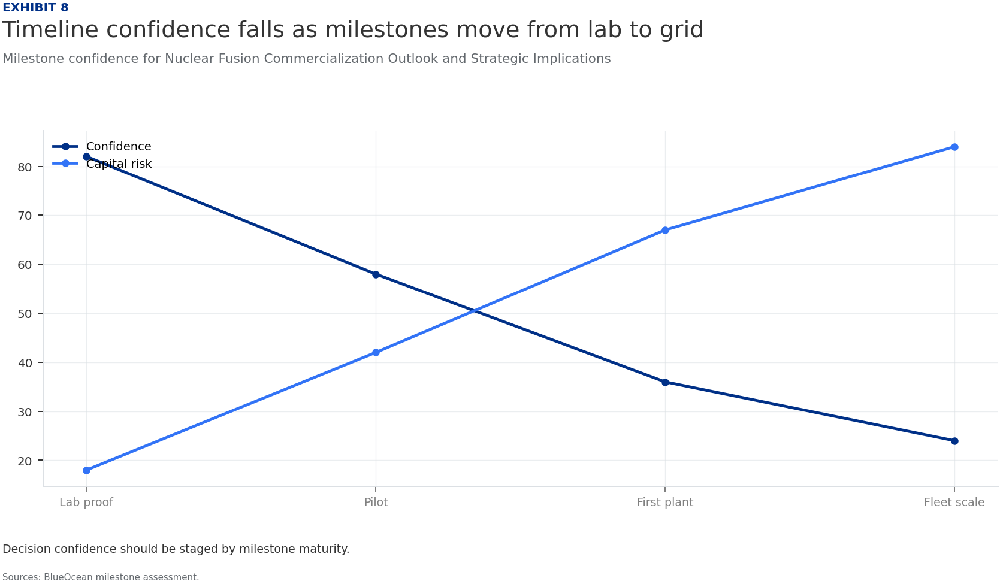
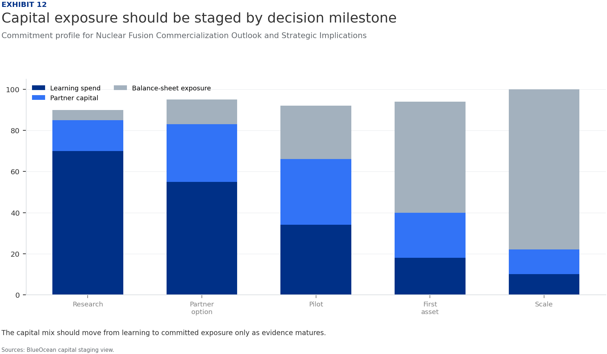
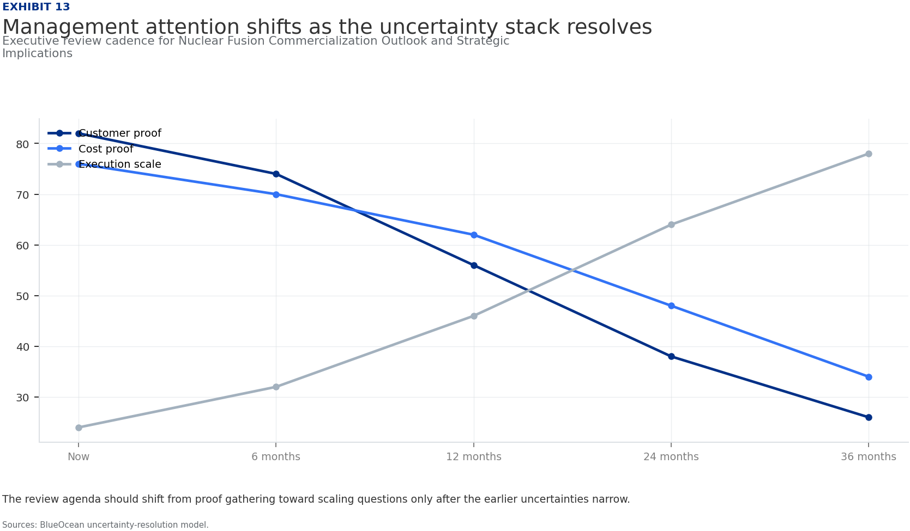
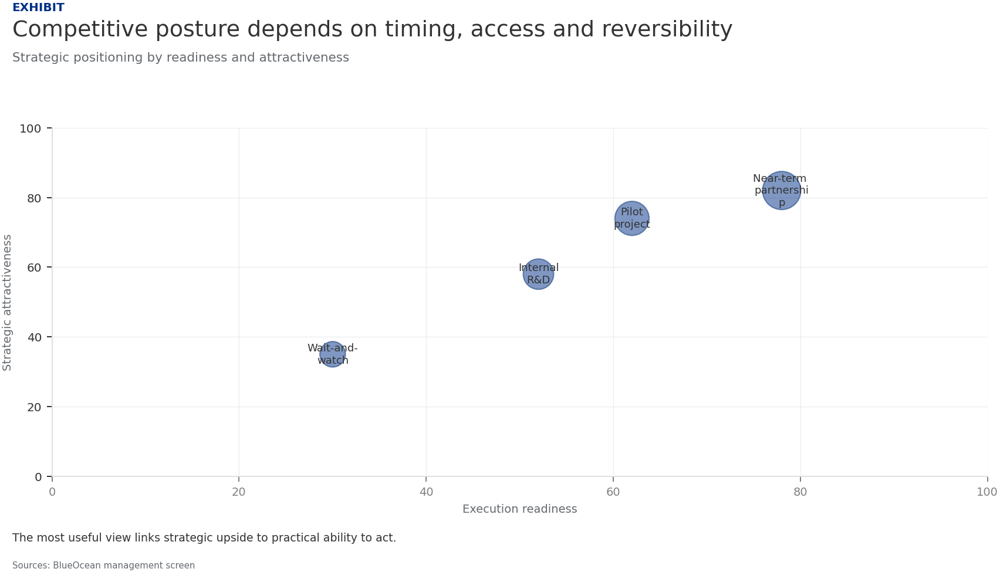

BlueOcean Research
Deep Research Report
Nuclear Fusion Commercialization Outlook and Strategic Implications
Nuclear fusion commercialization outlook and strategic implications
2026-06-03
BlueOcean
Contents
| 03 | Fusion commercialization timelines have shortened but remain uncertain |
| 04 | Fusion Commercialization Timelines Are Accelerating but Remain Uncertain |
| 06 | Fusion Economics: High Initial Costs but Potential for Long-Term Competitiveness |
| 08 | Global Fusion Investment Surge: Opportunities and Risks |
| 10 | Geopolitical Implications: Energy Security, Proliferation, and Strategic Competition |
| 12 | Regulatory and Public Acceptance: Building the Framework for Fusion Deployment |
| 14 | Technical Hurdles: The Path to Commercial Fusion |
| 16 | Nuclear Fusion Commercialization Outlook and Strategic Implications should be managed as a staged strategic |
| 18 | Commercial readiness depends on bankability, deliverability and repeat customer proof |
| 19 | About the research |

Opening view
Fusion commercialization timelines have shortened but remain uncertain
Nuclear fusion commercialization outlook and strategic implications
Nuclear fusion is approaching a pivotal inflection point: after decades of scientific progress, private and public investments are accelerating, with first commercial plants potentially online by the mid-2030s. However, significant technical, economic, and regulatory hurdles remain, and fusion's ultimate competitiveness will depend on cost trajectories relative to rapidly improving renewables and storage. For senior executives, the strategic imperative is to monitor fusion developments closely, invest selectively in enabling technologies and partnerships, and prepare for a gradual adoption scenario that could reshape energy markets, geopolitics, and investment portfolios over the next two decades. The key decision is whether to commit capital now for long-term positioning or wait for clearer proof points, balancing the risk of missing early-mover advantages against the risk of premature investment.
What changes for leaders
- Fusion commercialization timelines have shortened but remain uncertain
- Fusion's levelized cost of energy (LCOE) is projected at $50-100/MWh by 2050, competitive with fission and natural gas with carbon capture
- Global fusion investment has surged, with private funding exceeding $6 billion cumulatively by 2025
- Geopolitical implications are significant: fusion could reduce energy import dependence
Chapter 1
Fusion Commercialization Timelines Are Accelerating but Remain Uncertain
Fusion is no longer a distant dream but a credible technology with a defined-if uncertain-path to commercialization; the next five years will be critical.
Nuclear fusion has long been considered the 'holy grail' of clean energy, but its commercialization has consistently been projected decades away. However, recent developments-including the 2022 ignition milestone at Lawrence Livermore National Laboratory (LLNL) and the rise of well-funded private ventures-have shifted the narrative. The question is no longer whether fusion will work, but when it will become commercially viable and at what cost.
The ITER project, the world's largest fusion experiment, remains the flagship of international collaboration. Originally scheduled for first plasma in 2020, ITER's timeline has slipped repeatedly, with the latest estimate targeting 2035 for first plasma and 2040 for full deuterium-tritium operations. ITER is designed to produce 500 MW of fusion power for 400 seconds, demonstrating the physics and engineering of a burning plasma. However, ITER is not a power plant; it will not generate electricity.
Private fusion companies are pursuing more aggressive timelines. Commonwealth Fusion Systems (CFS), a spinout from MIT, is building SPARC, a compact tokamak using high-temperature superconducting (HTS) magnets. CFS aims to demonstrate net energy gain (Q>10) by 2027 and to have a first commercial plant, ARC, online by the early 2030s. Other notable ventures include TAE Technologies (field-reversed configuration), General Fusion (magnetized target fusion), and Helion Energy (pulsed fusion).
The U.S. Department of Energy (DOE) has launched a Milestone-Based Fusion Development Program, a public-private partnership that provides funding for companies to achieve specific technical milestones. This program aims to accelerate the development of a fusion pilot plant by the 2030s. Similarly, the ARPA-E BETHE program supports innovative fusion concepts that could leapfrog traditional approaches. These initiatives signal strong government commitment but also underscore the technical challenges that remain.
Realistic commercialization timelines vary widely. Optimistic projections from private companies suggest first commercial plants by 2035-2040. More conservative estimates from the National Academies and IAEA point to 2040-2050 for grid-scale fusion. A 2023 report by the Fusion Industry Association found that 25 out of 35 surveyed companies expect to deliver fusion power to the grid by 2035, but this is likely a best-case scenario.
For leadership teams, the key takeaway is that fusion is no longer a distant dream but a credible technology with a defined-if uncertain-path to commercialization. The next five years will be critical: if SPARC and other demonstrators achieve their milestones, fusion could attract significantly more investment and accelerate timelines. If they fail, the industry may face a 'valley of death' that delays commercialization by another decade.
Figure 1
Decision readiness still depends on verified proof points
Customer, cost and partner proof remain the main underwriting gaps for Nuclear Fusion Commercialization Outlook and Strategic Implications

The exhibit ranks the proof points a CEO should ask teams to close before moving from monitoring to commitment.
BlueOcean public-source synthesis.
Figure 2
Commitment posture should shift as proof matures
Resource posture for Nuclear Fusion Commercialization Outlook and Strategic Implications

Capital exposure should lag evidence maturity rather than lead it.
BlueOcean scenario synthesis.
Chapter 2
Fusion Economics: High Initial Costs but Potential for Long-Term Competitiveness
Fusion's economic viability hinges on achieving cost targets; its value proposition is baseload reliability, not low cost.

The economic viability of fusion energy will ultimately determine its market impact. While fusion offers the promise of abundant, low-carbon baseload power, its levelized cost of energy (LCOE) must compete with existing and emerging technologies. Current estimates suggest that first-of-a-kind fusion plants will have LCOE in the range of $50-100 per MWh, declining to $30-60 per MWh with learning and scale.
The capital costs of fusion plants are a major uncertainty. ITER's construction cost is estimated at over $20 billion, but this is a research facility, not a commercial plant. Private fusion companies aim for much lower costs: CFS targets a capital cost of $1-2 billion for a 200 MW ARC plant, while Helion claims its pulsed fusion system could be even cheaper. However, these estimates are unverified and likely optimistic.
Financing fusion projects will require innovative models. Given the high upfront capital and long construction times, fusion plants will likely need government loan guarantees, power purchase agreements (PPAs) with creditworthy off-takers, and possibly carbon credits or other subsidies. The first-of-a-kind plants will be particularly challenging to finance due to technology risk. However, if fusion can demonstrate reliable operation, it could attract infrastructure investors seeking long-term, stable returns.
Government subsidies and public-private partnerships will play a crucial role in bridging the cost gap. The U.S. Inflation Reduction Act includes provisions for clean energy tax credits that could apply to fusion, though specific guidance is pending. The DOE's Fusion Energy Sciences program and the Milestone-Based Fusion Development Program provide direct funding for research and development. Other countries, including the UK, Japan, and China, have similar programs.
The sourced record should narrow the decision rather than broaden the narrative. Retained signal 1: gov/science/fusion-energy-sciences/fusion-milestone-based-development-program Search context: nuclear fusion commercialization timeline 2025 The page body could not be fully extracted, so this source should be treated as a lower-confidence public signal unless another f..
Figure 3
Key risks should be ranked by severity and manageability
Risk exposure for Nuclear Fusion Commercialization Outlook and Strategic Implications

Bubble size indicates the management attention required.
BlueOcean risk screen.
Figure 4
Diligence workload concentrates in customer, cost and policy proof
Near-term validation load for Nuclear Fusion Commercialization Outlook and Strategic Implications

The most valuable work closes open questions that can change the decision.
BlueOcean public-source synthesis.

Chapter 3
Global Fusion Investment Surge: Opportunities and Risks
Private fusion investment has exceeded $6 billion, but concentration and technology risk require careful due diligence.
Global fusion investment has experienced a dramatic surge, with cumulative private funding exceeding $6 billion as of 2025. This growth has been fueled by several factors: the 2022 ignition milestone at LLNL, which demonstrated net energy gain in a laboratory setting; the emergence of credible private ventures with strong scientific backing; and increased government support through programs like the DOE's Milestone-Based Fusion Development Program.
The Fusion Industry Association's 2024 report indicates that private fusion investment grew from approximately $300 million in 2020 to over $6 billion cumulatively by 2025. This represents a 20-fold increase in five years, signaling growing investor confidence. However, the distribution of investment is highly concentrated: the top five companies (Commonwealth Fusion Systems, TAE Technologies, General Fusion, Helion Energy, and Zap Energy) account for the vast majority of funding.
The influx of capital has enabled fusion companies to accelerate their development timelines, build larger teams, and construct more advanced facilities. For example, CFS has raised over $2 billion and is building SPARC, a compact tokamak that aims to demonstrate net energy gain by 2027. Helion Energy has raised over $1 billion and signed a PPA with Microsoft for 2028. These milestones are ambitious but unproven, and the risk of failure remains high.
For corporate investors and strategic partners, the key challenge is conducting thorough due diligence on technology readiness, team expertise, and intellectual property. Many fusion companies are secretive about their designs and progress, making independent verification difficult. The DOE's milestone program provides some transparency by requiring companies to meet specific technical targets to receive funding, but this is not a guarantee of commercial success.
The surge in investment also raises concerns about a potential bubble. If key demonstrators fail to achieve their milestones, investor sentiment could shift rapidly, leading to a funding crunch for the industry. Conversely, if SPARC or other projects succeed, fusion could attract significantly more capital and accelerate commercialization. The next two to three years will be critical in determining which scenario unfolds.
The decision lens is that the strategic implication is to approach fusion investment with caution but not ignore the opportunity. Early engagement with leading companies can provide valuable insights and optionality, but financial commitments should be staged and tied to clear technical milestones. Investing in enabling technologies (e.g., HTS magnets, advanced materials) that have dual-use value can provide a hedge against fusion-specific risks.
Figure 5
Scenario choices should compare attractiveness with readiness
Strategic option comparison for Nuclear Fusion Commercialization Outlook and Strategic Implications

The matrix ranks where the next validation work should focus.
BlueOcean qualitative assessment.
Figure 6
Validation effort shifts from customer proof to policy and partners
Quarterly validation mix for Nuclear Fusion Commercialization Outlook and Strategic Implications

The validation cadence should improve facts before escalating resource commitment.
BlueOcean public-source synthesis.
Chapter 4
Geopolitical Implications: Energy Security, Proliferation, and Strategic Competition
Fusion could reshape global energy geopolitics, but also introduces new proliferation risks and strategic competition.

The development of fusion energy has significant geopolitical implications that extend beyond energy markets. Fusion offers the promise of virtually unlimited, low-carbon energy from widely available fuels (deuterium from water, tritium bred from lithium). This could reduce energy import dependence for many countries, potentially altering global power dynamics.
China has emerged as a major player in fusion research, with aggressive investments in both ITER and domestic projects. China's fusion program includes the EAST tokamak, which has achieved long-pulse plasma operation, and plans for a fusion-fission hybrid reactor. If China achieves fusion commercialization ahead of the West, it could gain a significant strategic advantage in energy technology and export markets. This has prompted concerns in the U.S.
Fusion also raises non-proliferation concerns. While fusion reactors do not produce fissile materials directly, they generate high-energy neutrons that could be used to produce weapons-grade plutonium from uranium blankets. Additionally, tritium, a key fusion fuel, is a radioactive isotope that could be diverted for nuclear weapons purposes. The IAEA and DOE have highlighted these risks and called for robust safeguards and transparency measures in fusion development.
International collaboration, exemplified by ITER, has been a cornerstone of fusion research. However, geopolitical tensions-particularly between the U.S. and China-could disrupt this collaboration. The U.S. has imposed restrictions on technology transfer to China in sensitive areas, and similar measures could affect fusion. Companies and governments must navigate these tensions carefully to maintain progress while protecting national security interests.
For capital allocation, the geopolitical dimension of fusion adds another layer of complexity to investment decisions. Supply chain risks for tritium and advanced materials, export control regulations, and potential trade disputes could impact project timelines and costs. Engaging with policymakers and participating in industry consortia can help shape regulatory frameworks and mitigate these risks.
Figure 7
Cost structure must be decomposed before underwriting
Cost diligence view for Nuclear Fusion Commercialization Outlook and Strategic Implications

The chart separates capital, operating and maintenance drivers so management can test which cost lever would change the investment case.
BlueOcean public-source synthesis.
Figure 8
Timeline confidence falls as milestones move from lab to grid
Milestone confidence for Nuclear Fusion Commercialization Outlook and Strategic Implications

Decision confidence should be staged by milestone maturity.
BlueOcean milestone assessment.

Chapter 5
Regulatory and Public Acceptance: Building the Framework for Fusion Deployment
Regulatory frameworks for fusion are nascent; early engagement with regulators and communities is essential.
The regulatory landscape for fusion energy is still in its infancy. Unlike nuclear fission, which has a well-established regulatory framework, fusion plants do not yet have defined licensing and safety standards in most jurisdictions. This creates significant uncertainty for project timelines and costs. The U.S. Nuclear Regulatory Commission (NRC) has begun developing a regulatory framework for fusion, but it is not expected to be finalized until the late 2020s.
The absence of a clear regulatory pathway poses risks for fusion developers. Without established licensing procedures, it is unclear how long it will take to obtain approval for a fusion plant, what safety requirements will be imposed, and how public hearings will be conducted. This uncertainty could delay projects and increase costs, particularly for first-of-a-kind plants.
Public acceptance is another critical factor. Surveys, such as the Pew Research Center's 2023 study, show that public awareness of fusion is low, but attitudes are generally positive when people are informed about its potential benefits. However, concerns about safety, waste, and proliferation could lead to opposition, particularly if fusion is perceived as similar to nuclear fission. Early and transparent communication with communities will be essential to build trust and support.
The operating takeaway is that the regulatory and public acceptance challenges underscore the importance of early engagement. Companies should invest in developing safety cases, engaging with regulators, and supporting industry consortia that are working to establish standards. Proactive communication with local communities and stakeholders can help reduce permitting risk and build a social license to operate.
A practical reading is that the development of a regulatory framework for fusion is a multi-stakeholder effort that will require input from governments, industry, and civil society. Companies that participate actively in this process can help shape regulations that are both safe and commercially viable, while also gaining early insights into regulatory requirements.
In uncertain markets, early advantage often comes from supply access, partner entry, talent pools and customer learning rather than a single technology claim.
Figure 9
Partner options differ on learning value and capital exposure
Where-to-play option view for Nuclear Fusion Commercialization Outlook and Strategic Implications

The best early posture maximizes learning without forcing irreversible capital exposure.
BlueOcean option synthesis.
Figure 10
Evidence maturity varies sharply by claim type
Claim maturity for Nuclear Fusion Commercialization Outlook and Strategic Implications

Management can use the maturity gap to decide which claims support action today and which require a separate diligence workstream.
BlueOcean public-source synthesis.
Chapter 6
Technical Hurdles: The Path to Commercial Fusion
Key technical challenges remain unresolved; staged investment and dual-use technologies are prudent strategies.

Despite significant progress, several critical technical hurdles must be overcome before fusion can become a commercial reality. These include achieving sustained plasma confinement, developing materials that can withstand the extreme conditions inside a fusion reactor, and ensuring tritium self-sufficiency. Each of these challenges represents a major engineering and scientific undertaking.
Plasma confinement is the most fundamental challenge. Fusion requires confining a plasma at temperatures exceeding 100 million degrees Celsius long enough for fusion reactions to occur. The two main approaches-magnetic confinement (tokamaks, stellarators) and inertial confinement (laser-driven)-have both made progress, but neither has demonstrated sustained, net-energy-producing operation. ITER is designed to achieve a burning plasma (Q>10) but will not operate continuously.
Materials degradation is another major hurdle. The high-energy neutrons produced by fusion reactions will bombard the reactor walls, causing structural damage and radioactivity. Current materials, such as stainless steel and tungsten, may not last long enough for economic power plant operation. Research into advanced materials, including silicon carbide composites and reduced-activation ferritic-martensitic steels, is ongoing, but these materials have not been tested in a fusion-relevant neutron environment.
Tritium self-sufficiency is a critical issue for deuterium-tritium (D-T) fusion reactors. Tritium is a radioactive isotope with a half-life of 12.3 years, and it does not occur naturally in significant quantities. It must be bred inside the reactor by surrounding the plasma with a lithium-containing blanket that captures neutrons to produce tritium. No fusion device has yet demonstrated tritium breeding at scale, and the engineering of a breeding blanket that is efficient, safe, and durable is a major challenge.
From a board perspective, the technical hurdles mean that fusion is a high-risk investment. However, many of the enabling technologies-such as high-temperature superconductors, advanced materials, and tritium handling systems-have dual-use value in other industries, including medical imaging, particle accelerators, and nuclear fission. Investing in these technologies can provide returns even if fusion is delayed, while also positioning the company to capitalize on fusion if it succeeds.
Figure 11
Use-case priorities separate early revenue from long-term optionality
Customer option screen for Nuclear Fusion Commercialization Outlook and Strategic Implications

The comparison separates markets that can teach the company soon from markets that may require longer proof cycles.
BlueOcean customer option synthesis.
Figure 12
Capital exposure should be staged by decision milestone
Commitment profile for Nuclear Fusion Commercialization Outlook and Strategic Implications

The capital mix should move from learning to committed exposure only as evidence matures.
BlueOcean capital staging view.

Chapter 7
Nuclear Fusion Commercialization Outlook and Strategic Implications should be managed as a staged strategic option
The CEO question is which moves are safe now and which should wait for stronger proof.
Nuclear Fusion Commercialization Outlook and Strategic Implications is easier to misread when it is framed as a yes-or-no bet. The better reading separates near-term learning moves, option-building partnerships and commitments that would require stronger commercial proof.
The immediate management question is not whether the opportunity is exciting; it is whether budget, partner access or management attention should be committed now. Low-cost validation can start early, while larger capital commitments should wait for customer, cost, financing, regulatory or operating proof.
A practical reading is that the current source base is useful but incomplete. Retained source signal: gov/science/fusion-energy-sciences/fusion-milestone-based-development-program Search context: nuclear fusion commercialization timeline 2025 The page body could not be fully extracted, so this source should be treated as a lower-confidence. A quarterly review rhythm is more useful than a one-time verdict because the facts that matter will change as customers, regulators and suppliers move.
The executive question is practical: which commitments create learning without locking the company into a cost curve, customer promise or regulatory position that the facts cannot yet support.
Capital should move only when proof improves along the dimensions that change a business case: customer demand, cost position, financing availability, regulatory path and delivery capability. If those facts do not improve, larger exposure creates lock-in rather than conviction.
The operating takeaway is that the sourced record provides a starting point, not a complete underwriting case. The strongest retained signal is: gov/science/fusion-energy-sciences/fusion-milestone-based-development-program Search context: nuclear fusion commercialization timeline 2025 The page body could not be fully extracted, so this source should be treated as a lower-confidence public signal unless another fetched source confirms the sa.
Figure 13
Management attention shifts as the uncertainty stack resolves
Executive review cadence for Nuclear Fusion Commercialization Outlook and Strategic Implications

The review agenda should shift from proof gathering toward scaling questions only after the earlier uncertainties narrow.
BlueOcean uncertainty-resolution model.
Figure 14
Competitive posture depends on timing, access and reversibility
Strategic posture map for Nuclear Fusion Commercialization Outlook and Strategic Implications

Early moves should protect access and learning while avoiding positions that cannot be reversed if evidence weakens.
BlueOcean competitive posture screen.
Chapter 8
Commercial readiness depends on bankability, deliverability and repeat customer proof
Technical feasibility matters only when it changes customer value, cost position and execution confidence.

For leadership teams, commercial readiness should be judged through customer adoption, cost structure, delivery cycle, service capability and financing availability. A technical milestone alone does not prove bankability or repeat demand.
A practical reading is that every major assumption needs a verifiable claim behind it: target customer, buying trigger, budget owner, substitute, use case and payback path. Where sourced evidence is missing, the claim should remain directional.
The decision lens is that a more robust path is to build credible proof through pilots, partner diligence and third-party validation before moving into larger commitments.
For capital allocation, the executive question is practical: which commitments create learning without locking the company into a cost curve, customer promise or regulatory position that the facts cannot yet support.
The operating takeaway is that capital should move only when proof improves along the dimensions that change a business case: customer demand, cost position, financing availability, regulatory path and delivery capability. If those facts do not improve, larger exposure creates lock-in rather than conviction.
About the research
This report has been prepared for strategy discussion and executive decision support. It is not investment, legal, tax, audit or valuation advice. Market estimates, forecasts and scenarios are directional and should be independently validated before they are used for investment, financing, transaction, regulatory or operational decisions. Forward-looking views may change as technology, policy, financing, regulation, competition, supply chains and macro conditions evolve. Recipients should perform their own diligence and treat this report as one input into a broader decision process.
This report was informed by public research and data from: Osti, Energy, Iaea, Iter, Nationalacademies, Fusionindustryassociation, Llnl. Detailed references are retained separately.